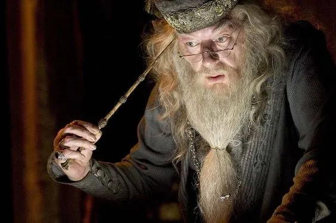

Мудрець
Мудреця можна впізнати за трохи відчуженим поглядом, мовою приправленою термінологією та любов’ю до філософських розмов. Представники цього архетипу дивакуваті, можуть поринути у світ фантазій і нескінченно вивчати щось нове. Допитливість та проникливий розум роблять їх цікавими співрозмовниками, але перевагу вони завжди віддадуть самотності.
